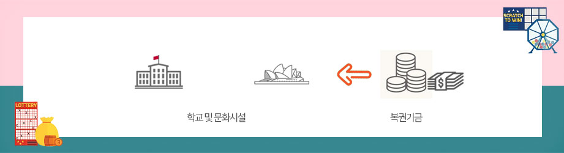
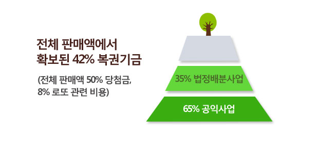
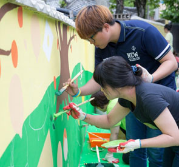
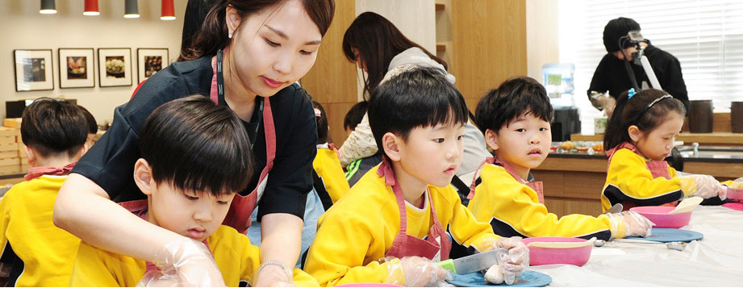
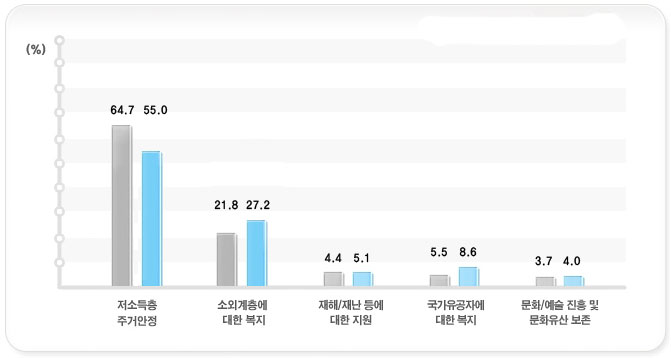
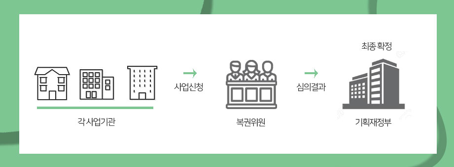

이슈 & 포커스
2018년도 복권기금 운용계획
복권이란 말에서 ‘대박’ ‘인생역전’ 만을 떠올린다면 복권의 즐거움을 절반만 아는 것이다. 복권에는 수억 원‘당첨’의 행운과 함께 ‘기부’ 라는 나눔의
기쁨도 담겨 있기 때문이다. 복권판매액으로 조성되는 복권기금의 운용 내용과 눈에 띄는 올해 신규 사업에 대해 알아봤다.
복권발행의 목적

많은 사람들이 ‘복권’ 하면 대박을 부추기는 ‘사행성 산업’이라고 생각하지만, 사실 복권은 부담 없이 나눔과 기부를 실천할 수 있는 좋은 방법이다. ‘당첨’에 대한 기대는 덤으로 따라오는 즐거움일 뿐이다. 복권을 발행하는 근본 목적은 공익 재원 조성에 있다. 정부의 일반예산으로는 어렵지만 공익을 위해 꼭 필요한 사업에 복권기금이 사용된다. 미국의 하버드대학,컬럼비아대학, 예일대학 등이 복권기금의 재정 지원을 받아 설립됐으며, 호주 시드니의 오페라 하우스도 복권기금의 지원으로 만들어졌다.
우리나라 복권은 공익적
성격이 강한 편이다.
우리나라는 특히 복권 판매액에서 차지하는 공익기금 재원 조성률이 40%로 높은 편이다. 외국은 보통
30%고, 20%대인 경우도 많다. 올해 복권기금 예산 9153억 원 중 7620억 원이 저소득층과 소외계층을
위한 복지재원으로 사용된다.


다문화가정, 한부모가정
지원 사업 확대
올해 복권기금 운용계획 가운데 가장 주목할 부분은 취약계층인 다문화가정과 한부모가정에 대한 지원 사업이 대폭 확대됐다는 점이다. 먼저
다문화가정 지원에는 지난해 대비 32.3% 증가한 423억 원을 배정했다.

이 같은 복권기금의 전폭적인 지원이 점차 사회적 이슈가 되고 있는 다문화가정의 사회통합과 안정에 크게 기여할 것으로 보인다. 지금까지 정부의
일반예산으로 지원하던 한부모가정 자녀의 학비 지원도 복권기금 지원 사업으로 이관됐다.
소외계층의 안정적인 사회
정착과 경제 자립을 위한
지원 사업도 시작된다.
출소자의 안정적인 사회 진출을 돕는 기능 취득 교육센터 구축과 노인·다문화가정 등의 취약계층이 경
제적 피해를 입지 않도록 상담과 지원을 해주는 소비자교육 사업이 그것이다. 이 밖에도 소년원무의
탁 출원생과 생계 곤란 청소년을 위한 심리치료는 물론, 취업을 알선하는지원 사업, 도심 내 다가구주
택 등을 매입, 임차해 기초생활수급자에게 저렴하게 임대해주는 저소득층 주거안정 사업도 있다.

엄격한 평가로
내실 있는 사업 추진 노력

복권기금 사업들은 어떻게 결정될까. 먼저 부처·기관별로 사업신청을 받아 복권위원들이 심의한다. 복권위원은 정부 부처별 고위공무원 10명, 민간 위원 11명 등 총 21명으로 구성된다. 여기서 통과된 사업들은 다시 기획재정부 예산실 심의와 국회 심의를 거쳐 최종 확정된다. 선정 기준은 앞에서 설명한 것처럼 저소득층 지원에 우선순위를 둔다. 또한 일반예산으로 할 수 없는 사업인지, 이 사업을 통한 수혜자가 많은지도 고려한다. 요즘처럼 고용 창출이 중요할 때는 가급적이면 일자리 창출 효과가 큰 사업에 중점을 둔다. 다문화가정의 언어 및 교육 지원 사업(244억 원)과 폭력피해 이주 여성 지원 사업(47억 원) 등이 대표적인 예다.
복권위원회는 복권기금 사업이 좀 더 효율적으로 이뤄질 수 있도록 민관합동평가단을 구성해 사업평가를 엄격히 하고 있다. 이재구 사무처장은 “좀 더 내실 있는 복권기금 사업 추진을 위해 지난해부터 평가점수를 다음해 예산에 반영하고 있다. 잘하는 곳엔 인센티브를 주고 못하는 곳 엔 패널티를 주겠다는 뜻”이라면서 “앞으로 더욱 확대할 계획”이라고 말했다. 국민이 낸 소중한 기부금이 허투루 쓰이는 것을 용납하지 않겠다는 각오다.
- About LOCOM
- LOCOM Activity
- Lottery History
- LOCOM News